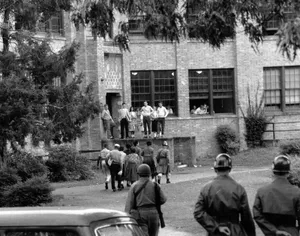

Arkansas’s earliest inhabitants included indigenous hunting-and-gathering peoples whose cultures flourished about 500 CE. One of the distinctive features of these communities was their use of bluff shelters for seasonal or other short-term residence. Later peoples left large mounds—markers of sacred spaces, public places, and burial sites—as well as other remains along the Mississippi River.
Spanish and French expeditions traveled the Mississippi regions in the 16th and 17th centuries, and the Italian-born French explorer Henri de Tonty founded the Arkansas Post on the lower Arkansas River in 1686. The first permanent white European settlement in what is now Arkansas, it served as a fur-trading centre and a way station for travelers between the Gulf of Mexico and the Great Lakes.
After the Louisiana Purchase (1803), Arkansas lay within the territories of Louisiana until 1812 and Missouri until 1819, when it became a separate territory. Arkansas’s northern boundary, latitude 36°30′ N, was the line of the Missouri Compromise of 1820—the agreement that allowed for the admission of Missouri to the union as a slave state.
Statehood and Civil War
By the time Arkansas achieved statehood in 1836, all land titles of the local indigenous peoples—including the Quapaw, Osage, Caddo, Cherokee, and Choctaw—had been withdrawn by the U.S. Congress, and the groups were forced westward into the Indian Territory, the future state of Oklahoma. Violence broke out intermittently along the state’s western border until the late 19th century, when the frontier atmosphere disappeared with the white settlement of the Indian Territory.
Many white settlers brought with them (or purchased) slaves of African descent, which ultimately led Arkansas, like other states of the South, to develop an agricultural economy that was heavily dependent on the institution of slavery. The issue of slavery figured prominently in the decision of 11 Southern states to secede from the union in 1860–61 to form the Confederate States of America; this act ultimately ignited the American Civil War. Arkansas was the ninth state to secede, in May 1861, after the Confederate capture of Fort Sumter and Pres. Abraham Lincoln’s subsequent call for volunteers. Union sentiment was strong in northern Arkansas, however, and some 10,000 Arkansans—both white and Black—joined Federal forces. Although many more Arkansans fought for the Confederacy, Little Rock fell to Union troops in 1863, and for the next decade the state was a political battleground between the supporters of secession and the imposed Republican government of the North.
Arkansas was readmitted to the union in 1868, but the state was still racked with internal strife. As was the case in most of the other former Confederate states, defeat in the Civil War triggered the establishment of a sharecropping system of tenant farming, the emergence of a race problem of new and formidable dimensions, and the spread of poverty. It also led to the development of a virtually one-party political system; Arkansas returned to the fold of the Democratic Party in 1874, and it remained there for more than a century.
Arkansas in the 20th and 21st centuries
In the 20th century Arkansas shifted away from its cotton-focused agricultural base to a diverse economy with significant manufacturing and services components. The change began in the 1930s, by which time a vast gulf had emerged between the sharecroppers and other tenant farmers on one end of the social scale and the managers and landlords on the other. (The owners of small farms or businesses constituted another class.) Through the establishment of the Southern Tenant Farmers’ Union, the sharecroppers were able to improve their conditions considerably, as well as influence the national farm policy of Pres. Franklin D. Roosevelt and his successors. Over the next several decades, mechanization of agriculture and the shift from cotton farming to the cultivation of rice and soybeans virtually eliminated the sharecropper—though not the rural poor.
Meanwhile, the effects of the Great Depression (1929–c. 1939) in Arkansas were amplified by several years of drought, forcing many farmworkers to turn fully—and permanently—to other sorts of labour. During the next decade, World War II (1939–45), with its large number of soldiers and defense-related industries, extended changes to the most isolated parts of Arkansas. By the early 21st century, not only had agriculture been eclipsed by the combined total of the state’s diverse service activities as the principal component of the economy, but, like many of its neighbours to the north, the state had become largely urbanized.
